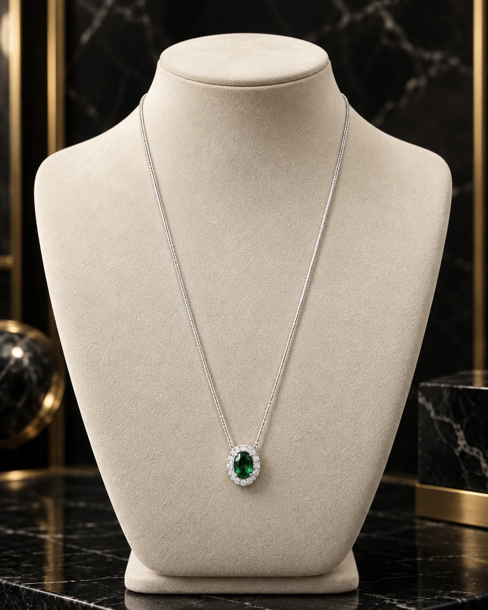

Escolha
Abra a peça que chamou sua atenção na coleção.
Veratus / Tempo e presença
Relógios, joias e acessórios escolhidos para marcar presença.
01 / Manifesto
Presença é quando a escolha já fala por você.
02 / Assinatura
Toque nos pontos e conheça os princípios por trás do V e da espiga. O relógio ao lado acompanha a hora de São Paulo em tempo real.
03 / Coleções
01 / VERATUS FEMININO
Uma nova leitura de presença.

Consulte os modelos da coleção pelo WhatsApp. Conversar
04 / Como comprar
Abra a peça que chamou sua atenção na coleção.
O WhatsApp abre com a peça escolhida e a referência da sua visita.
A equipe confirma disponibilidade, valor e forma de pagamento antes do pedido.
Frete grátis e entrega em até 7 dias, sem taxas adicionais.
Você pode desistir em até 7 dias após o recebimento.Condições de compra